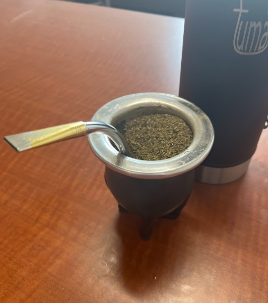

The beverage that unites a nation.

Yerba Mate is a traditional beverage from Argentina. Mate itself, is the name of the drink, whereas yerba refers to the herbs placed within.
These are some of my favorite yerba brands:
- Canarias
- Taragui
- Especially Taragui Despalada
- CBSE (a kind of "cold" mate)
- Orange Flavor
- Guarana Flavor
- Forest Berry Flavor
- Lemon Flavor
- Playadito
Below is a video on how to properly prepare and drink yerba mate. As always though, there is no better way to learn than by practice!
Yerba Importation per Country in 2022
This interactive graph measures yerba imports of different countries in units of kilograms.
It is important to note that although many countries import yerba, not all of these countries track these imports.
These countries shown did track their yerba imports in 2022.